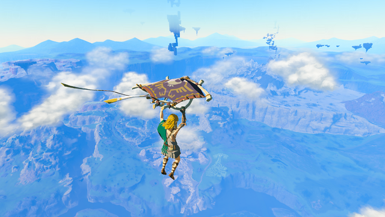

图：树下向内尔梵招手求助的女人——别急着赶过去，先问清地点再出发。
📑 本篇目录
先说结论：求助者是伊盖队假扮的
本任务是「公主目击情报！」的 12 个调查点之一。平原外围驿站外，有个女人在路边向金发男子内尔梵招手求助。顺着她的指引沿路向东走、爬上山顶、滑翔到对面平台，等在那里的不是遇难者——她是伊盖队假扮的，还会再招来两名同伙，一共三人围攻你。打赢后沛恩赶来，调查完成。
| 阶段 | 要做的事 |
|---|---|
| 问线索 | 回白诘报社问三叶，再去平原外围驿站找沛恩 |
| 赶路 | 沿路向东走，爬上山顶，滑翔到对面平台 |
| 战斗 | 求助者现出伊盖队真身，再招来两名同伙，共 3 人 |
| 收尾 | 打赢后沛恩赶来，调查完成 |
接取与奖励
| 项目 | 内容 |
|---|---|
| 接取 | 白诘报社问三叶，再去平原外围驿站找沛恩 |
| 所属 | 「公主目击情报！」的 12 个调查点之一 |
| 奖励 | 完成一个调查点，沛恩付卢比，计入 12 个调查的里程碑 |
第一步：回白诘报社问三叶
先回利特村东边的白诘报社，问社长三叶打听下一个调查点的线索。她会告诉你沛恩去了平原外围驿站。
第二步：平原外围驿站找沛恩
平原外围驿站在海拉鲁平原的西南边。赶到驿站外路边，找到正在现场的沛恩。沛恩正在采访内尔梵：有个女人在三岔路口向内尔梵招手求助，请你去看看。
第三步：沿路向东走
从三岔路口出发，沿路向东走。一路上她还会再出现几次，前后一共 4 处会合点，跟着指引走就行。途中会经过一处怪物营地，打不过可以绕过去，不必清场。
第四步：爬上山顶，滑翔到对面平台
走到峡谷尽头后爬上山顶。崖壁高，找矮一点的崖壁分段爬，中途找地方歇脚恢复精力。也可以从附近的鸟望台飞过去。到了山顶，滑翔到对面的平台上。

图：滑翔到对面的平台——也可以从附近的鸟望台飞过去。
第五步：伊盖队现形，三人围攻
落在平台上，求助的女人现出真身：她是伊盖队假扮的。交手后她还会再招来两名同伙，一共三名伊盖队围攻你。打赢之后沛恩赶来，调查完成，回沛恩身边汇报，领卢比报酬。

图：伊盖队现形——求助的女人是假扮的，还会再招来两名同伙，一共三人。
关键信息表
| 项目 | 内容 |
|---|---|
| 接取地点 | 白诘报社问三叶，平原外围驿站（海拉鲁平原西南边）找沛恩 |
| 赶路 | 沿路向东走；途中怪物营地可绕过去，不必清场 |
| 上山 | 找矮一点的崖壁分段爬，中途歇脚；也可从附近鸟望台飞过去 |
| 真相 | 求助的女人是伊盖队假扮的，还会再招来两名同伙，共 3 人 |
| 奖励 | 沛恩付卢比；计入「公主目击情报！」12 个调查的里程碑 |
容易翻车的地方
- 怪物营地硬打——路上那处怪物营地打不过可以绕过去，不必清场。
- 爬高崖壁硬上——找矮一点的崖壁分段爬，中途歇脚恢复精力，别摔下来。
- 以为只有一个人——求助者现形后还会再招来两名伊盖队，一共三人，留好血量与武器。
- 打完直接走了——记得回沛恩身边汇报，领卢比报酬并计入里程碑。
一句话总结
报社问三叶、驿站找沛恩，沿路向东走、爬上山顶滑翔到对面平台——求助的女人是伊盖队假扮的，打赢三人，沛恩赶来，调查完成。